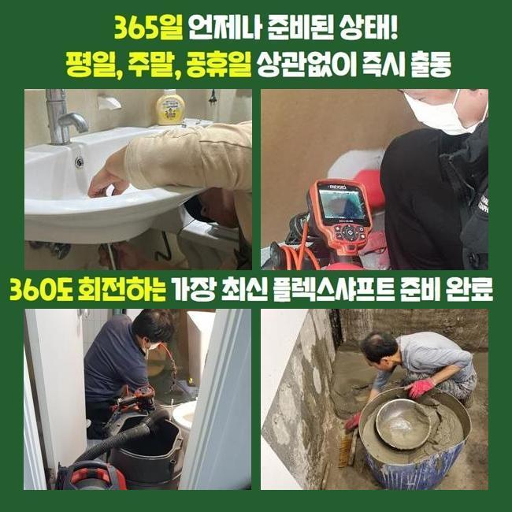
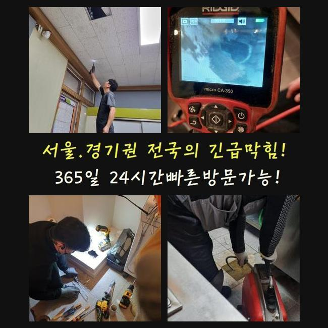
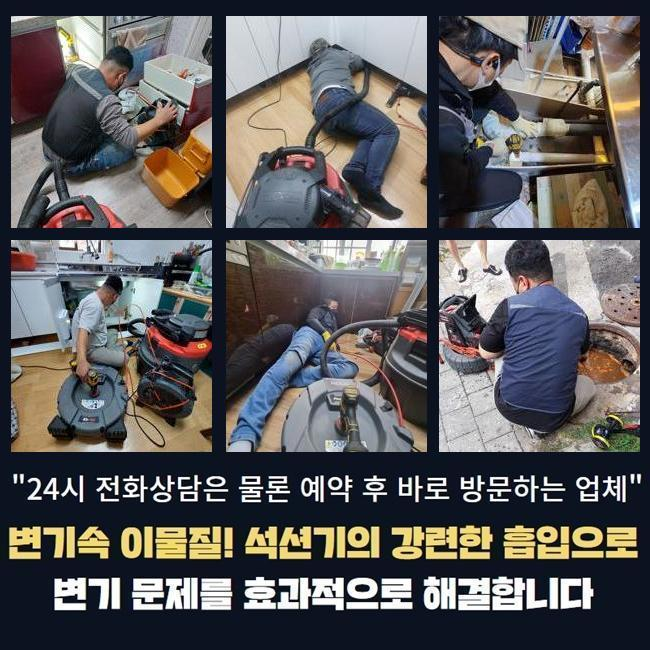
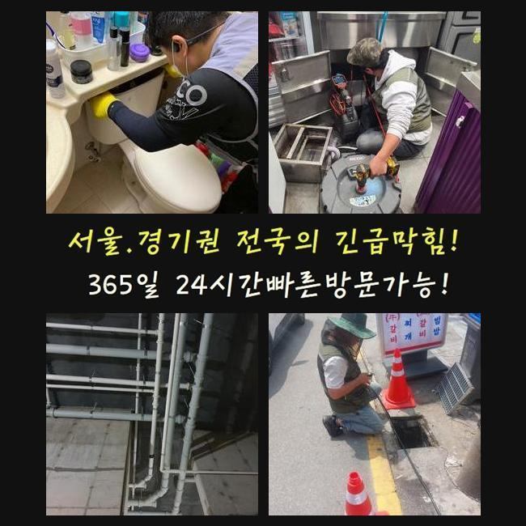
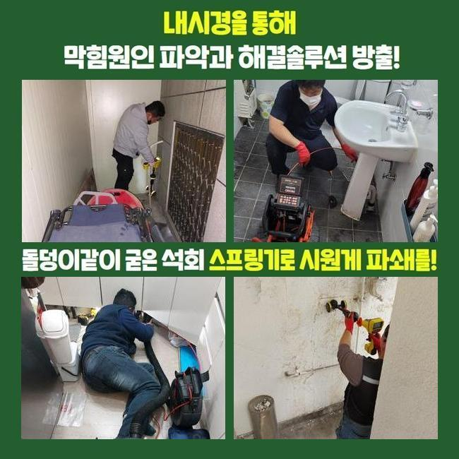
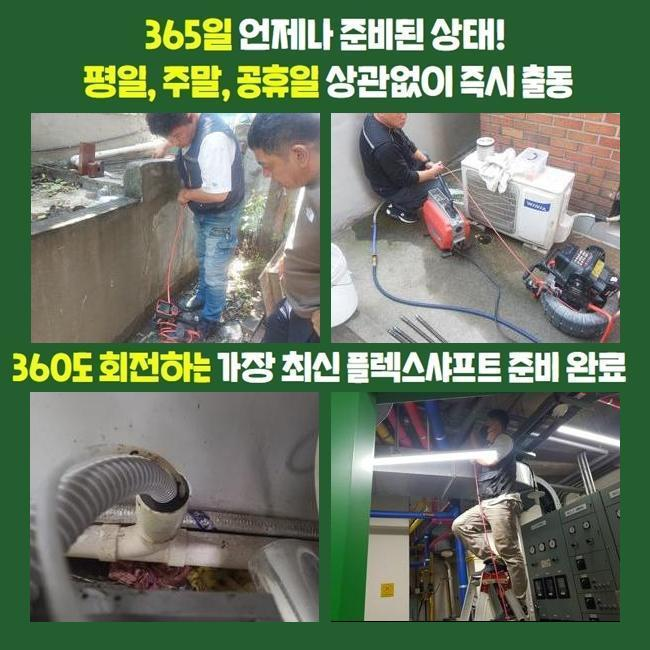
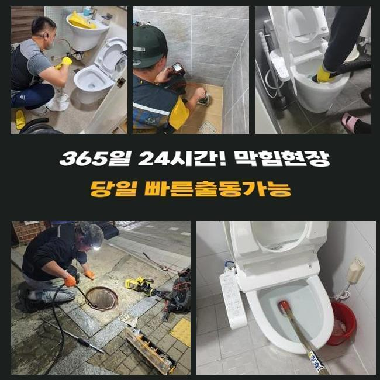

🏠 안현동오수관역류 연성동 고압세척비용 배관전문
용인 싱크대막힘 전문 시공 후기

📋 작업 개요
- 위치: 용인
- 서비스 유형: 싱크대막힘, 변기막힘, 하수구막힘, 배관막힘, 누수수리, 역류해결, 뚫는업체, 배관청소, 고압세척, 악취차단
- 작업 일시: 2025. 2. 14. 22:36
- 업체명: 하수구수사대 (010-5615-2118)
🔍 문제 상황
안현동오수관역류 연성동 고압세척비용 배관전문
하수구 물이 정상 배출이 안되면 여러 측면의 어려움들을 경험하게 됩니다
일반적 사례를 소개하면 부엌 안의 싱크대가 갑작스럽게 찌꺼기가 차서 하수의 이동이 중단되는 케이스도 다수이며 화장실 안의 양변기나 세탁실 아래가 막혀버려서 이용에서의 어려움이 벌어질 때도 있습니다
아파트에 사시는 고객님께 방문해달라는 연락을 받으면 세대 내의 문제라고 보고 실내에서 여러 장치를 활용하여 막힘을 없애줍니다
굵은 메인배관의 경우에는 아파트 건물이라면 서비스 업체를 불러서 정기적으로 관로 세척을 하기에 여기가 다치는 것은 많이 보이는 건 아니에요
상업적 건물이라면 하수관의 곤란이 일어날 가능성이 상대적으로 높다고 할 수 있습니다
이번 포스팅의 주인공은 상가에 장착되어 있는 메인관로가 차단되어 화장실은 물론 내부의 설비들이 다 중단되어서 얼른 고쳐줘야 하겠다며 방문해 주시게 된겁니다
현장 조사에 돌입해보니 주차장 천장 측에 내장된 메인관로의 구조가 보여서 작업 실행에 옮겼습니다
해당 부위에 탈이 나면 실내에 위치한 가지배관의 오류로 추정하는 것 보다는 대형 배관 속에서 파손부가 일어났거나 불필요한 물질이 쌓여서 통수가 부실하게 되었을 경우가 더욱 우세합니다

🔎 원인 분석
💡 전문가 진단: 정밀 진단 장비를 사용하여 슬러지의 고착 여부를 판명하고 타격/세척 작업을 실시했습니다.
많은 배관들의 물이 집합하는 관로부터 세정을 하고 점차 사이즈가 작은 파이프라인까지 세척합니다
천장 속에 설치된 수로 설비였으므로 사다리를 타고 올라가서 작업을 실시하기로 계획하고 하수도 폐쇄 문제 처리를 도와줄 장치들을 옮겨두고 작동시켰습니다
상부만 뚫어내더라도 심층부 영역까지는 미처리 되었으므로 공동배관을 다룰 때는 가운데 부근까지도 긁어내는 작업을 해줘야 합니다
배관 덮개를 열어서 여의치 않다면 타공해서 조치를 취할 수 있을 법한 상태로 세팅을 마칩니다
배관을 밝게 비추는 카메라로 시선이 닿지 않는 배관 속의 여기저기를 살펴보았습니다
어디까지 더러워진 것인지 장애물을 만들어 낸 사유가 뭔지를 보다 상세하게 내역을 평가해야 작업의 방향성을 바로잡을 수 있습니다
메인배관 안의 트러블이 있다면 배관 자체의 규격이 여유롭고 길이도 길어서 소형 주택 현장에 적용하게 되는 소형의 석션장치로는 다스리기 힘듭니다
자바라 줄이 저 아래까지 배치되기 힘들기에 흡입력도 다소 뒤떨어집니다
기름덩어리를 쪼개어 정화 작업을 효과적으로 도맡는 플렉스샤프트 장비 마찬가지로 오래 걸리며 구멍도 많이 뚫어야 해서 어렵겠다 싶었네요

🔧 작업 과정
상가건물 내부의 하수도 중단이 일어나는 곳이라면 빠른 세정에 들어가서 말끔하게 만들어줘야 합니다
이럴 때는 강력한 파워로 여기저기에 붙어있는 찌꺼기를 완전히 제거될 수 있게끔 시공해서 파이프 안을 새것처럼 닦아내야 근원적인 문제들을 처치할 수 있습니다
하수구가 틈도 없이 차버리면 내측을 치우기가 힘들어 질 수 있으니 우선 스프링을 진입시켜서 가장 밀집도가 높은 섹션을 풀리도록 건드려서 통수가 되게끔 해주고 완성도 높은 수로 정비를 이어가기로 결정했어요
장치를 해당 위치로 넣으려고 슬러지 축적이 과한 쪽에 접근성을 향상시키는 이동경로를 만들어나갔어요
이번 작업장소인 상가는 여러 개의 식품 영업장들이 들어가 있었고 기름성질이 상당량 내부로 유입되고 모여서 하수관이 번들대는 기름이 덕지덕지 붙어있었습니다
고착화된 유막은 온수로도 개선될수 없기때문에 오래 머물러 있었다면 석회질로 변모해서 더 공고하게 결합되는 상태가 되어버립니다
무른 성질을 띠고 있을 때 스케일링을 해주지 않고 오래 놔둔다면 일부 구간에서부터 규모가 더 확대되면서 원형 통로가 꽉 막혀서 배수가 영구적으로 발생하지 않게 봉인됩니다
이와 같은 유분막들을 효율적으로 제거하려면 답은 고압세척 장비이며 높은 출력 덕분에 걸리는 부분 없이 오염원이 가득 찬 수로를 맑게 전환해줄 수 있었습니다
끈적하니 엉겨붙은 노폐물이 세찬 물줄기로 인하여 점차 정리되는 현황을 배관카메라를 동원해서 확인하며 잔여물 없이 정리했어요
움직임이 전혀 없었던 거대한 덩어리들이 서서히 삭제되어갔고 작은 찌꺼기 파편들만 잔여했더라고요
고압세척의 경우에는 현장마다 차이는 있겠지만 오염물질이 자리한 장소들을 전반적으로 닦아내야 또다시 차단이 되는 등의 사태가 유발되지 않아요
오래된 기름덩어리를 고압수로 청소한 뒤 시공 전후 계속 사용하는 카메라로 다양한 구간들을 탐색하며 깨끗한 상태로 탈바꿈됐나 봤습니다
하수도를 들여다봤던 초반 시점에는 빽빽하게 들이찼다 싶을만큼 오염이 됐었던 시설물이지만 여러 기능들의 툴을 사용한 단계들을 마무리짓고 보니 더러운 물질이 싹 사라지게 된 정비가 완료된 작업물을 받아보게 됐네요
물이 잘 내려가야하니 수도꼭지를 틀어서 물을 흘려보내면서 방해 없이 흘러나가는 전후 변화를 속시원하게 검사하는 점검과정을 거치고서 마감을 짓게 되었습니다


✅ 작업 완료
시공장비를 도달시키고자 타공을 해줬던 구역들은 기록해뒀다가 보완을 해주는 테이프로 야무지게 커버링해서 누수문제가 나타나지 않게 단속까지 마쳤습니다
하수시설의 공백으로 여러 문제를 낳았던 상가 속의 한 곳에서 습한 물기가 고여만 갔고 주방 쪽의 물 범람까지 나타났던 상황을 처리하고 작업을 마감할 수 있었습니다!
일반 가정집보다 훨씬 큰 현장은 혼자 수습하는게 불가능한 사안이며 단순하게 접근해서 혼자 뚫어보려고 하다가는 기초설비에 문제가 확대되는 사례도 아주 많습니다
가정집도 그렇지만 복잡다단한 상가빌딩이라도 효율적인 도구의 적용으로 정상화를 해드리고 있으니 개선을 해보셨으면 좋겠습니다




⚠️ 베란다 누수 및 방수 관리 방법
- ✅ 비가 많이 올 때 창틀 주변이나 아래층 천장에 얼룩이 생기는지 정기적으로 확인해 보세요.
- ✅ 우수관 주변 실리콘 마감이 들뜨거나 깨진 틈새가 있는지 손상 여부를 수시로 체크하세요.
- ✅ 베란다 바닥 타일의 줄눈(메지)이 소실되면 그 틈으로 물이 침투하여 누수가 유발됩니다.
- ✅ 누수 의심 증상 발견 시 방치하면 아래층 손실이 커지므로 즉시 전문가의 진단을 받으십시오.
💡 핵심 정리
- 확실한 장비 작업(내시경 점검 및 샤프트 스케일링)으로 원인을 뿌리 뽑습니다.
- 작업 후 1년 이내에 동일한 부위 재발 시 100% 무상 A/S 서비스를 보장합니다.
- 서울 · 경기 · 인천 전 지역에 24시간 언제든 긴급 출동할 수 있도록 항시 대기 중입니다.
❓ 자주 묻는 질문 (FAQ)
🚨 용인 싱크대막힘 문제로 고민이신가요?
정확한 원인 진단과 확실한 시공으로 재발 없는 해결을 약속드립니다.
24시간 긴급 출동 | 서울 · 경기 · 인천 전지역 | 1년 내 재발 시 무상 A/S